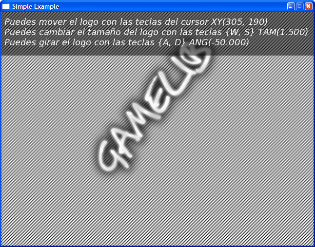
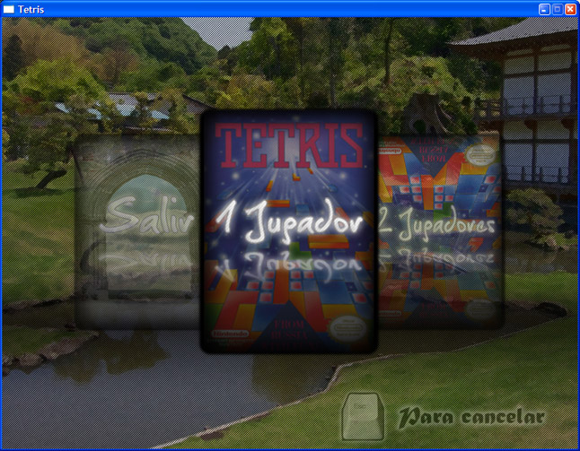
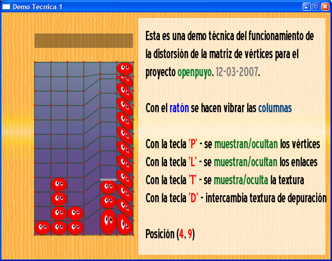
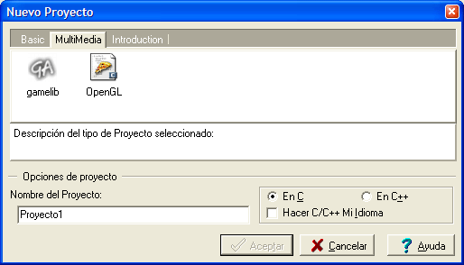
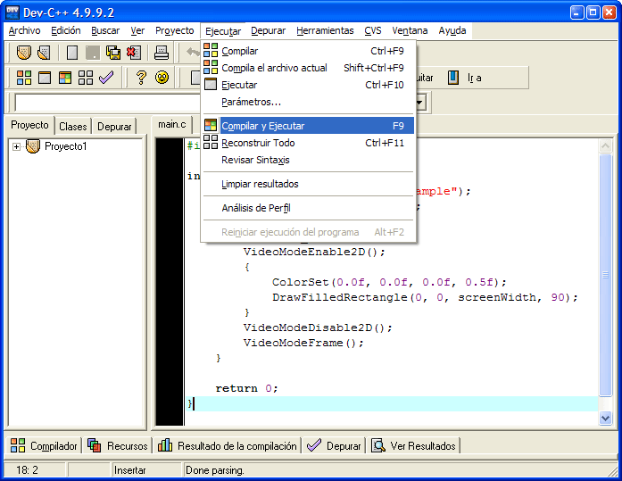

¿Qué es GameLib?
Gamelib es una librería para C diseñada para crear videojuegos de forma fácil y rápida. Está diseñado para hacer juegos 2D usando aceleración gráfica.
GameLib utiliza SDL, SDL_image, SDL_mixer, SDL_ttf, SDL_net, OpenGL. Sin embargo no es necesario conocer estas librerías para usarlo.
El API de GameLib es sencillo y su instalación en windows es cosa de unos minutos.
Permite cargar imágenes BMP, PNG, JPG. Permite cargar y mostrar fuentes TrueType y OpenType con borde suavizado. Permite pintar imágenes rotadas, escaladas y con transparencias con aceleración gráfica MUY RÁPIDO. Permite reproducir módulos de sonido MOD, XM, S3M. Reproducir MP3, WAV y OGG. Y todo eso con muy pocas líneas de código.
Puedes ver un ejemplo aquí. Necesitas estas DLL
¿Porqué GameLib?
Si estás estudiando programación y quieres usar C para algo mas que ver una consola negra mostrando texto aburrido y quieres hacer tus propios juegos pero nunca has visto nada al respecto, GameLib es para ti.
Gamelib tiene también como objetivo promocionar el uso de C y ayudar a su aprendizaje de una forma divertida.
Un programa usando GameLib podría ser algo así:
#include <gamelib/gamelib.h> int main() { VideoModeSetTitle("Simple Example"); VideoModeSet(640, 480, true); while (!key[_esc]) { VideoModeEnable2D(); { ColorSet(1.0f, 1.0f, 1.0f, 0.5f); DrawFilledRectangle(0, 0, screenWidth, screenHeight); } VideoModeDisable2D(); VideoModeFrame(); } return 0; }
¿Algún ejemplo?
Aquí puedes ver un pequeño ejemplo de funcionamiento con el codigo fuente comentado y coloreado:

Ver el Codigo fuente del programa
Si quieres ver un ejemplo todavía mas simple, con lo mínimo para ejecutar una aplicación hecha con gamelib, haz click aquí.
Algún otro ejemplo mas trabajado que usa Gamelib


¿Cómo usar gamelib en windows con facilidad?
Se puede usar GameLib desde windows con Dev-Cpp. Dev-Cpp es un entorno de desarrollo de C gratuito para windows que usa el compilador de C/C++ MingW.
Lo que necesitas:
Una vez bajadas las dos cosas, instalas del Dev-Cpp y con el Dev-Cpp instalado, al abrir el gamelib.DevPak, se debería instalar
Ahora ejecutas el Dev-Cpp y accedes al menú Archivo -> Nuevo -> Proyecto. Si se ha instalado correctamente, debería aparecer una ventana como esta:

Seleccionas en la pestaña MultiMedia, la opción gamelib. Seleccionas "En C", eliges un nombre para el proyecto y le das a aceptar.

Ahora pulsas la tecla F9 o accedes al menú Ejecutar -> Compilar y Ejecutar.
También puedes probar un pequeño proyecto ya hecho con gamelib: simple.
RECUERDA: para poder ejecutar programas hechos con GameLib necesitas estas DLL
Acceso SVN
Gamelib se puede descargar desde SVN en la dirección:
svn co http://svn.soywiz.com/gamelib/ gamelib
Contacta
¿Quieres colaborar en el proyecto?
Escribe un correo a soywiz@gmail.com